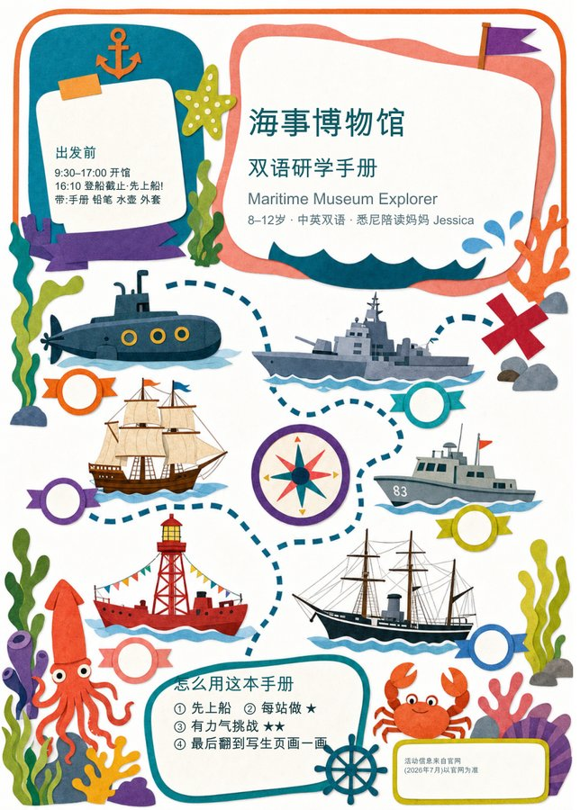
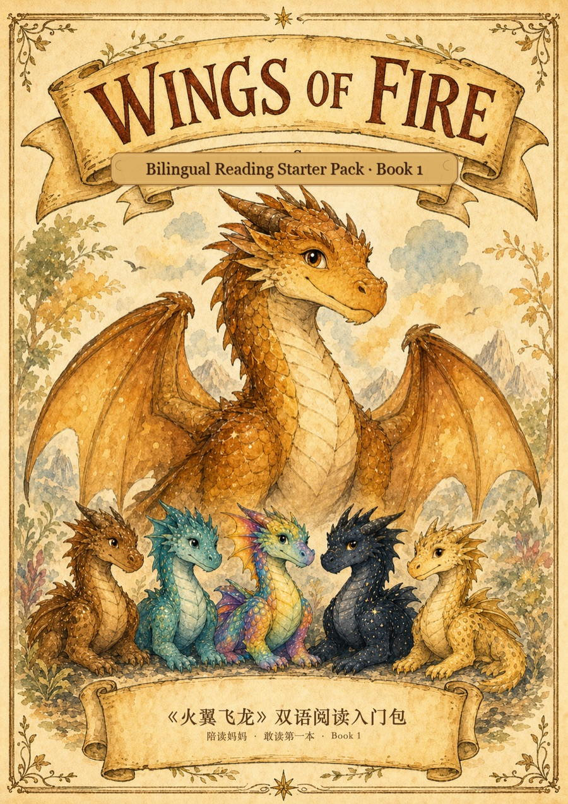
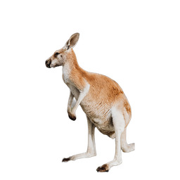
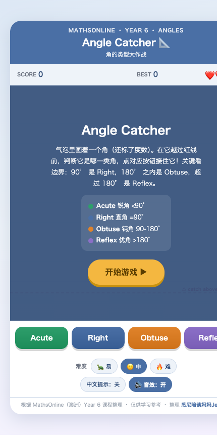
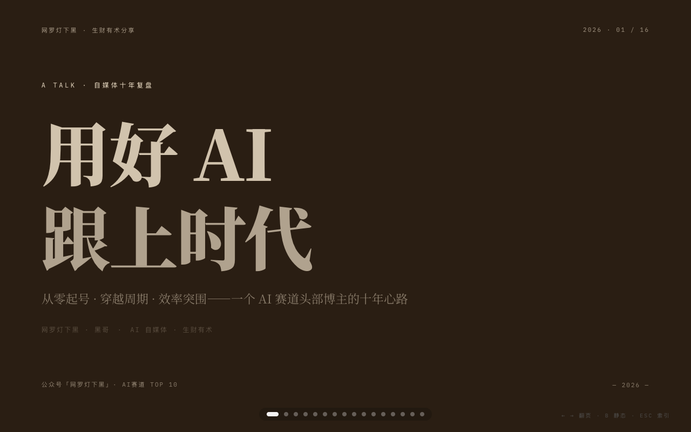
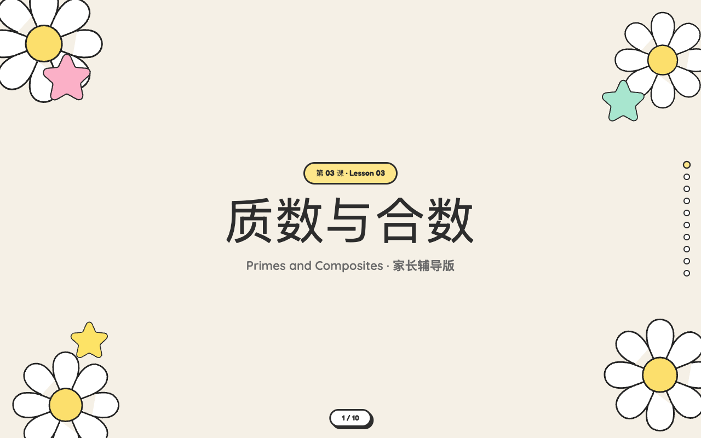

Turning everyday education problems into things you can open, play with, and actually use — notes, courseware, small games and desktop toys, all built with AI. 把日常陪读里的真实问题，做成能打开、能玩、能用的东西——双语笔记、互动课件、小游戏、桌面小玩具，全部用 AI 做出来。
A Sydney mum of two, English major turned self-taught builder. I sit next to my kids while they study, notice where the material breaks down, and rebuild it with AI into something clearer — then share the clean version with Chinese-speaking families finding their feet in Australia. 悉尼两娃妈妈，英语专业出身、自学用 AI 做东西。我陪着孩子写作业，发现哪里卡住，就用 AI 把它重做成更清楚的版本——再把脱敏后的成品，分享给同样在澳洲落脚的中文家庭。
learn in public → build the fix → share it back 公开地学 → 把问题做成解法 → 再分享回去
New channels light up as I start posting — follow whichever's live. 随着我持续发布逐个点亮，亮着的可以先关注。
building in public公开建造中
Everything here is made with Claude Code, out in the open — this site included. No team, no coding background — just a mum shipping small, useful things and showing how it's done. 这里的东西都用 Claude Code 公开做出来——包括这个网站本身。没团队、没代码背景，就是一个妈妈，一边做点有用的小东西，一边把过程写下来。
Follow along on RED在小红书跟着看 →
A bilingual scavenger-hunt booklet for a day at the maritime museum — six ship stops, key words to collect, and a sketch page. Made for kids 8–12.逛海事博物馆用的双语寻宝研学手册——6 个船只打卡站、边逛边收集核心词、还有写生页，适合 8–12 岁。

A hand-painted, bilingual pack that helps kids dare to open their first English original novel — a dragon-tribe map, key vocabulary, and a story path. Free to download, 6 pages, printable.帮孩子「敢读第一本」英文原版的双语入门包——龙族关系图、核心词汇、剧情脉络，手绘水彩绘本风。免费下载，6 页，可打印。

A little desktop pet that keeps the kids company while they study. Apple Silicon Mac — on first launch, right-click the app and choose Open.一只陪娃写作业的桌面小袋鼠桌宠。仅 Apple 芯片 Mac，首次打开请右键点 App 选「打开」。

Acute, right, obtuse and reflex angles — as bilingual notes, a printable, and a game.锐角 / 直角 / 钝角 / 优角——做成双语笔记、打印版、互动游戏。

A kraft-paper, magazine-style scrolling deck on putting AI to work in everyday life.牛皮纸杂志感的横向滚动 Deck，讲怎么把 AI 真正用进日常。

One Year 6 maths lesson, made four ways — bilingual notes, a printable, a scrolling deck, and a game.一节 Year 6 数学课，做成四种形式：双语笔记、打印版、滚动课件、互动游戏。
Let's talk.聊聊。
Moving to Australia, or already raising kids here? Come say hi — let's share what we've each figured out. 准备移民澳洲，或已经在这边陪娃读书？欢迎来加我，互通有无。
open to collaborate当前开放合作